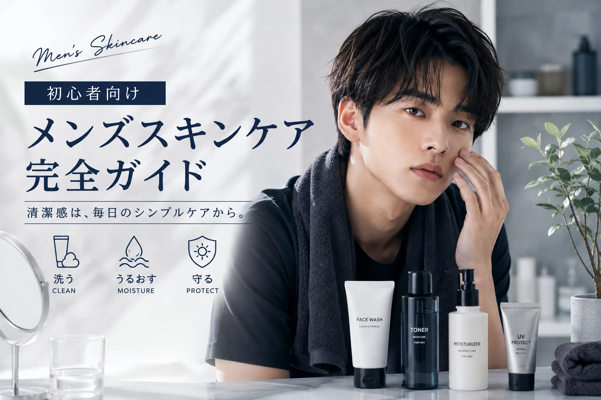

スキンケアは
難しく考えなくていい。
メンズスキンケアで大切なのは、 たくさんのアイテムを使うことではありません。
まずは「洗う・うるおす・守る」の 基本から始めてみましょう。
STEP 1
やさしく洗う
洗顔は肌についた汚れや余分な皮脂を落とすための基本ケアです。
洗顔のポイント
- ゴシゴシこすらない
- 泡を使ってやさしく洗う
- 洗顔後はタオルで押さえるように水分を取る
STEP 2
肌にうるおいを
洗顔後は肌が乾燥しやすいため、 保湿を意識しましょう。
化粧水を使う場合は、 肌になじませるようにやさしく使います。
ここがポイント
「たくさん使えばいい」というわけではありません。 肌の状態を見ながら必要な量を使いましょう。
乳液やクリームで
保湿を仕上げる
化粧水などで水分を補った後は、 乳液やクリームなどで保湿します。
ベタつきが気になる場合は、 少量から試してみましょう。
日中は
UVケアも意識
外出する日は日焼け止めを使うことも スキンケアの一つです。
選ぶときのポイント
- 使用する場面に合ったもの
- 塗りやすいテクスチャー
- 続けやすい価格
朝と夜で
シンプルに続ける
朝
洗顔 → 保湿 → UVケア
夜
洗顔 → 保湿
自分の肌状態を
知っておこう
スキンケアアイテムを選ぶときは、 自分の肌の状態も確認してみましょう。
乾燥しやすい
つっぱりや乾燥が気にならないか確認。
ベタつきやすい
Tゾーンなどの皮脂が気になるか確認。
混合タイプ
部分によって乾燥やベタつきが異なる場合もあります。
初心者なら
まずこれだけ
洗顔料
毎日の洗顔に。
保湿アイテム
化粧水や乳液などから選びます。
日焼け止め
日中のUVケアに。
スキンケア以外も
大切に
肌を整えたいときは、 スキンケアだけに注目するのではなく、 毎日の生活習慣も見直してみましょう。
肌をこすりすぎない
汗をかいたら適切にケアする
UVケアを意識する
自分に合うケアを無理なく続ける
迷ったら
この流れから
洗う → うるおす → 守る
まずはシンプルなルーティンを 習慣にするところから始めましょう。
メンズスキンケアの
よくある質問
メンズ用のスキンケアじゃないとダメ？
必ずしも「メンズ用」である必要はありません。 自分の肌に合う使いやすいアイテムを選ぶことが大切です。
化粧水だけでもいい？
肌の状態や使うアイテムによって異なります。 保湿を目的に、自分の肌に合う方法を選びましょう。
何種類くらい揃えればいい？
最初からたくさん揃える必要はありません。 まずは洗顔と保湿など、基本から始めるとシンプルです。
肌トラブルが気になる場合は？
気になる症状が続く場合や強い場合は、 自己判断だけでケアせず専門家への相談も検討しましょう。
メンズスキンケアは
シンプルでいい。
まずは、 「洗う・うるおす・守る」 の基本を意識しましょう。
そして、自分の肌の状態を確認しながら、 無理なく続けられる方法を探してみてください。
少ない予算で、
最大限かわいく。
メンズ美容も、 シンプルに楽しもう。